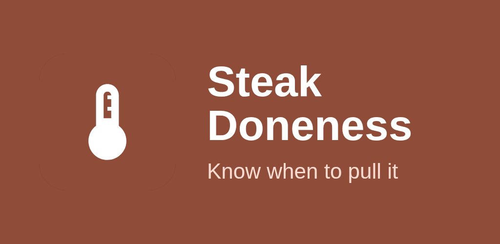
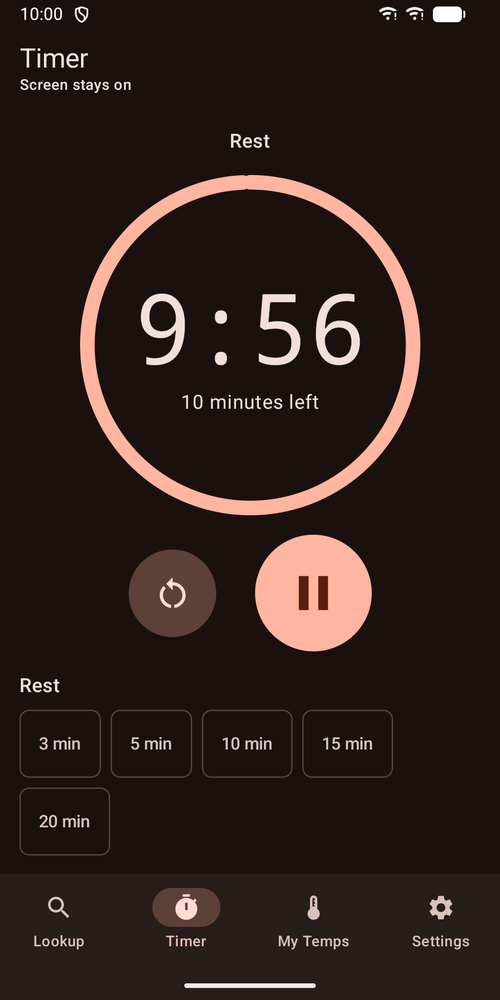
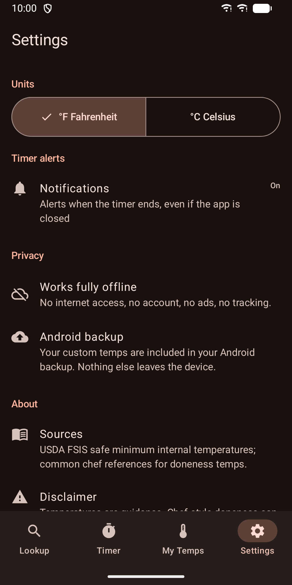

Punto de carne y temporizador
Temperaturas para ternera, cerdo, pollo, cordero y pescado, con temporizador.







Acerca de la app
Sabe justo cuándo retirar la carne del fuego. Elige la carne, el corte y el punto que te gusta. Obtienes tres datos en letra grande: - Temperatura de retirada: cuándo sacarla del fuego - Temperatura final: a cuánto llega tras el reposo con calor residual - Tiempo de reposo: cuánto dejarla reposar antes de cortar Después, un toque inicia el temporizador de reposo. AVISOS DE SEGURIDAD Las temperaturas de estilo chef, como una hamburguesa poco hecha o una pechuga de pollo jugosa, pueden estar por debajo del mínimo seguro del USDA. La app las muestra igualmente, pero con una advertencia clara y el mínimo del USDA a su lado. PERSONALÍZALO ¿Prefieres el chuletón algo más crudo? Edita las temperaturas de cualquier corte incluido. Añade tus propios cortes, como picanha o paleta de cerdo para deshilachar. Restablece cualquier cambio con un toque. Tus temperaturas también muestran la advertencia del USDA. UN TEMPORIZADOR SENCILLO Presets de reposo de 3 a 20 minutos y de darle la vuelta de 1 a 4 minutos. Suena una alarma al terminar y la pantalla se mantiene encendida durante la cuenta atrás. ¿Vas a salir de la app? Con un toque, la app Reloj del móvil sigue con la cuenta atrás. WIDGET PARA LA PANTALLA DE INICIO Tu última consulta se queda en la pantalla de inicio: corte, punto, temperatura de retirada y temperatura final. Tócala para volver a la app. PENSADA PARA LA PARRILLA - Texto grande y botones grandes para dedos grasientos - °F o °C, se recuerda tu elección - Tema claro y oscuro según tu móvil - Diseños para móvil y tableta; en tableta la tabla y el temporizador van lado a lado - Compatible con lectores de pantalla PRIVACIDAD - La app no tiene permiso de internet, así que no puede conectarse - Sin cuenta, sin seguimiento, sin analíticas - Tus temperaturas personalizadas se incluyen en la copia de seguridad de Android. Nada más sale del dispositivo. COMPRA La app es de pago. Todas las funciones están incluidas tras la compra. No hay compras dentro de la app. Incluye ternera, cerdo, pollo, cordero y pescado. Los mínimos seguros se basan en el USDA FSIS. Las temperaturas son orientativas; usa siempre un termómetro calibrado.